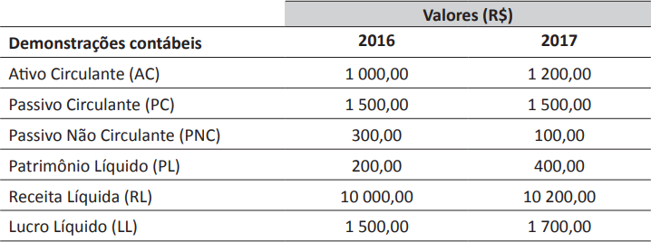
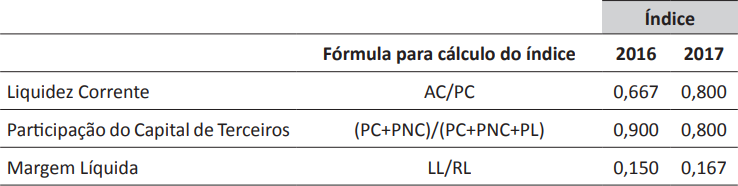

Na Tabela 1, apresentam-se alguns valores apurados nas demonstrações contábeis de determinada
empresa nos anos de 2016 e 2017.
Tabela 1 – Valores das demonstrações contábeis da empresa

Na Tabela 2, mostra-se o comportamento dos índices de liquidez corrente, da participação no capital de
terceiros e da margem líquida dessa empresa, nos referidos anos.
Tabela 2 – Índices calculados pela empresa

Com base nas tabelas apresentadas, avalie as afirmações a seguir.
-
O aumento das vendas da empresa explica o aumento no índice de margem líquida.
-
O aumento nos valores apurados pelo capital próprio explica o aumento no índice de liquidez
corrente.
-
A diminuição das dívidas de longo prazo explica a diminuição no índice de participação no capital
de terceiros.
É correto o que se afirma em
-
I, apenas.
-
II, apenas.
-
I e III, apenas.
-
II e III, apenas.
-
I, II e III.